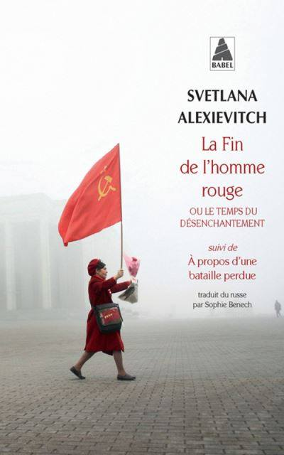
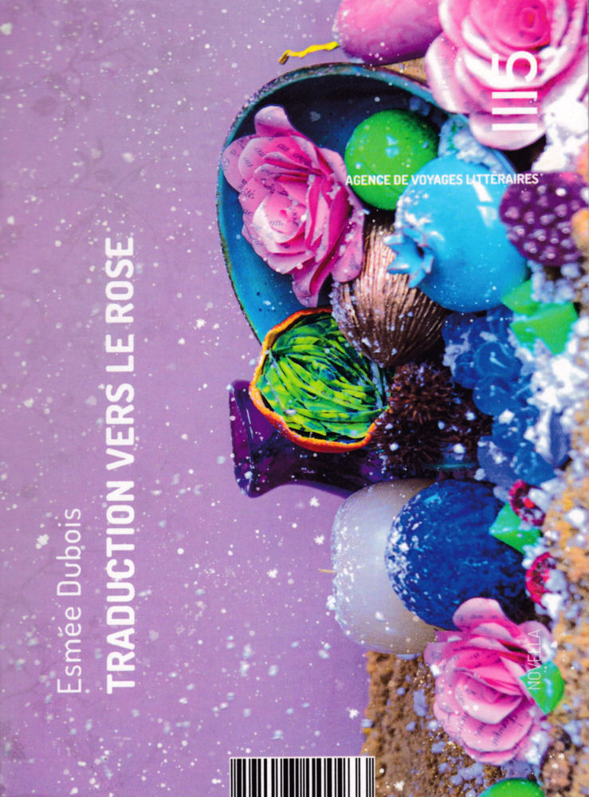

Avec l’arrivée de l’automne, la lumière change et les arbres se parent d’orange. Pour le club de lecture du mois, le thème n’était autre que : les couleurs. Comme d’habitude, à nous d’interpréter cela librement. De mon côté, j’ai très vite fait une fixette : il s’agissait de choisir des titres avec une couleur dedans (et si possible pas deux fois la même couleur, parce que c’est comme ça, je m’impose des règles). J’ai ainsi choisi trois livres : un récit de non-fiction, un recueil de nouvelles et un court roman.

Rouge. Une évidence : La fin de l’homme rouge m’a profondément marqué et c’est peut-être bien mon livre préféré. Je le relirai sûrement un jour, malgré ses presque sept-cent pages, mais je dois d’abord terminer tous les autres livres de Svetlana Alexievitch. J’ai déjà parlé de celui-ci ici il y a quelques années et à vrai dire je n’ai pas grand chose à ajouter. Alors plutôt que de palabrer pour ne rien dire, voici plutôt un extrait. C’est une dénommée Marina Tikhonovna Issaïtchik qui parle : “A quoi ça sert de penser à tout ça, maintenant ? C’est comme ramasser des clous après un incendie. Tout a brûlé. Toute notre vie… Tout ce qu’on avait a disparu… On a construit, construit… Sacha, lui, il était allé dans les terres vierges, il avait bâti le communisme là-bas. L’avenir radieux. Il disait qu’en hiver, ils couchaient sous la tente sans sac de couchage. Tout habillés. C’est là-bas qu’il a eu les mains gelées. Mais il était quand même fier ! “La longue route serpente… Salut à vous, terres vierges !” Il avait sa carte du Parti, une carte rouge avec Lénine, il y tenait beaucoup. Il a été député et stakhanoviste, comme moi. La vie a passé, elle a filé à toute allure. Il en reste plus rien… Aucune trace.”

Noir. Certes, son titre mentionne la couleur noire, mais ce petit recueil de textes m’évoque plutôt un arc-en-ciel de couleurs saturées. Cookie Mueller était un sacré personnage que j’ai déjà brièvement évoqué en chroniquant Comme une version Arty de la réunion de couture. Dans Traversée en eau claire dans une piscine peinte en noir, on la découvre à travers des textes s’étendant des années 60 aux années 80, de San Francisco à New York en passant par Berlin. Elle nous relate des anecdotes aussi variées que ses discussions avec Janis Joplin (qui fut sa voisine), son acouchement, son séjour en hôpital psychiatrique ou encore le tournage du film underground Pink Flamingos dans lequel elle a joué. Chaque texte est un condensé de vie, donc de couleurs.

Rose. Celui-là, je me le suis procuré tout récemment. L’idée c’était de profiter du club de lecture pour découvrir un petit livre que je ne n’aurais probablement pas lu dans d’autres circonstances. Je reviendrai un peu plus longuement à l’avenir sur ce Traduction vers le rose d’Esmée Dubois. C’est un court roman, dans la lignée de ce que proposent les éditions 1115, dans lequel la couleur rose joue un rôle très précis qu’il serait un peu long d’expliquer dans les détails. Disons qu’elle intervient dans la procédure complexe de traduction du froid en chaleur, qui doit sauver un royaume de la mort et qui demande un certain effort d’imagination. J’ai bien aimé, et le jury du Grand Prix de l’Imaginaire aussi vu qu’il lui a décerné le prix de la Nouvelle/Novella francophone en 2024.